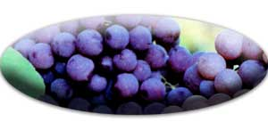
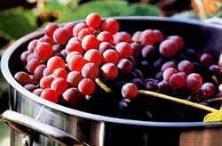
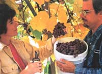
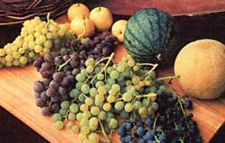

Grow seedless grapes and fill your pantry with luscious jams, jellies, juices, raisins, wines and vinegars.
Imagine harvesting shimmering clusters of golden, honey-sweet 'Himrod' grapes; rosy-pink 'Reliance' (shown left); midnight-blue 'Glenora;' or spicy, dazzling-red 'Canadice' right from your own back yard. Unlike supermarket varieties, which taste ordinarily mild and tart, homegrown grapes burst with full-bodied flavors ranging from slightly spicy to surprisingly sweet. And besides the pleasures of fresh-from-the-vine dining, you can turn these delicious seedless grapes into raisins, as well as homemade wine, juice, jelly, jam and fruit vinegar.
Grapevines are equally sensational in the landscape. Fast growing and versatile, they're wonderful for covering an arbor, gazebo, fence or trellis early each season to create a shady spot for relaxing during hot summer afternoons. The vigorous vines climb by winding their tendrils around any structure they are near, so you may need to tuck in or trim a few shoots here and there. Colorful fruit and bold, textured foliage bring added interest to the landscape in their own time.
GET GROWING
For table grapes and raisins, most people prefer seedless varieties, which are self-pollinating, quite winter-hardy and grow well in most parts of the country. Some of the best varieties are listed in the chart on Page 60, so you can start with a single "test" vine if you want. (For the best wine-grape varieties, see "Growing Grapes and Making Wine," April/May 2003.)
Grapes can grow in a wide range of soil types and conditions. For optimum growth and production they need a sunny location with good air circulation, and well-drained, slightly acidic soil (5.5 to 6.5 pH) of moderate fertility.
The warmer and sunnier the location, the sooner the soil will warm up in the spring, and the earlier the fruit will ripen. Planting grapes on a southern slope or south side of a building is ideal. In the coldest climates, where late spring frosts can blanket the ground at a moment's notice, choose a location sheltered from cold winds and avoid low-lying basins, where chilly trapped air can create a lingering frost pocket.
Plant bare-root grapevines in late winter or early spring, before the buds begin to swell. In southern areas, plant your vines in the fall. Young container-grown plants, available at many garden centers and farmer's markets, can be planted in spring, summer or fall. Space grapes 6 to 10 feet apart, or closer if you want to cover a structure such as an arbor or gazebo.
After your trellis or other (sturdy) support is installed, dig a hole at least twice as wide and as deep as the grape vine's root system. Add a shovelful of compost and about 1 cup of bone meal or 1 to 2 pounds of rock phosphate to each planting hole. Set the vine's roots in the hole just at or slightly below ground level. Fill the hole with soil, then water well.
A yearly mulch of quality compost is all the fertilization your grapes should need. Depending on the quality of your soil, compost may be needed only every two to three years. Several of our vines are mulched with well-aged rabbit manure or compost, and others receive nothing at all. All grow well and produce great-tasting fruit, but the fertilized vines are unquestionably more vigorous and productive than the rest.
Although grapes are somewhat drought-tolerant, water first-year plants weekly during dry months to help them become established. After that, you can probably water mature vines less often. We water our most productive vines once a week. Water needs are dependent on such factors as climate, soil type (a sandy soil will need to be watered more frequently than a clay-based soil), and such other cultural conditions as location and whether plants are mulched.
GRAPE DISEASES AND PESTS
Most of the varieties we grow are disease-resistant, so our vines have never really encountered any problems. But disease-resistant varieties are not totally disease-proof. Common fungal diseases, such as mildew or black rot, may take hold when grapes are grown in a poor location, where air circulation is inadequate or humidity levels are too high.
If fungal disease does become a problem, you can spray vines with a lime-sul fur or Bordeaux mix (a copper-based fungicide) before they leaf out in early spring. Diligent pruning also improves air circulation and reduces disease. You can increase the air circulation in humid areas by planting grapes in rows, or on fences or trellises that parallel prevailing winds.
Herbicide injury caused by overdrift from a neighbor spraying weeds is an even more common problem than fungal disease. Herbicides can damage plants up to 20 miles away from the spray site, and grapes are especially sensitive to 2,4-D, a widely used herbicide. If drift hits your grapes, leaves will be distorted and plants may die. For help diagnosing herbicide drift, contact your state agriculture department or university.
When it comes to pest control, birds and beneficial insects are the way to go. Dozens of birdhouses sit atop the fence posts of our 8,000-square-foot, deer-fenced garden. Each year, tree and violet-green swallows come back to nest in these houses, raising a new generation of insect eaters that control common grape pests such as grape leafhoppers, grape berry moths, aphids, flea beetles and Japanese beetles.
Other insect-eating birds include bluebirds, martins and wrens. If fruit-eating birds like robins become a problem, cover the grapes with bird netting. Establishing blackberry vines nearby will attract parasitic wasps, natural enemies of the grape leaf-hopper and grape berry moth, and planting a diversity of flowering plants will attract many beneficial insects to feast on grapevine pests.
By encouraging these natural methods, we seldom have a threatening population of bad bugs. Any marauding bugs escaping the birds and beneficials can be controlled with horticultural oil or insecticidal soap.
PRODUCTIVE PRUNING
For high-quality fruit, regularly prune the vines. Unpruned grapevines initially can produce more fruit than the vine can support; eventually they will grow into a tightly tangled maze of leaves and wood, producing little good-quality fruit.
When pruning, remember these basics:
• Grapes are produced on buds that originate from the previous season's wood growth.
• Prune vines in late winter or early spring, when they are dormant and after the danger of severe weather has passed.
• The first year of planting, remove all but the most vigorous stem with two to three good buds. Select the strongest and most upright shoot from these buds to become the main trunk.
• The farther the fruiting canes are from the main stein, the less likely they are to bear fruit.
Before you prune, decide what purpose you want the vines to serve. If you're more interested in covering an arbor or trellis, and fruit production is secondary, then prune the vines just to control growth. We leave five arms (branches/canes) of old wood to form a fan shape. Leave one or two short stems of last year's new wood on each arm; each stern should have two to three buds. Prune off everything else.
To prune for production, leave the main trunk with four arms of old wood so you have two sets of arms growing opposite each other and at right angles to the main trunk. Your trellis system should have a post placed 4 to 5 feet on each side of your vine, with wires strung horizontally between the posts.
Train the first set of lateral arms on a wire 30 inches above the ground; train the second set on a second wire placed 50 inches above the ground. Leave one or two short stems of last year's new wood on each arm. Each stem should have three buds, for a total of 12 to 24 buds per plant. Prune off everything else.
TAKE YOUR OWN CUTTINGS
As you prune your grapevines, you also can propagate new plants to expand your orchard or share with friends. Select healthy, pencil-thick hardwood stems about 12 to 18 inches long with three to four buds on each stem. Make a flat cut on the end of the stem that grew closest to a branch, and an angled cut on the end farthest from the branch. That way you know which end is up (the angled cut) and which end you should plant in the soil (the flat cut).
Plant several cuttings, flat-end down, with one bud remaining above the soil, into a 1-gallon container filled with potting mix. Place the container in a sunny window or greenhouse, and water so the soil stays slightly moist at all times. Roots will begin to form as the leaves develop, usually in about three to six weeks.
After the danger of frost has passed, you can place the container outside, and then transplant your new grape plants by summer's end.
HARVESTING GRAPES
You can sample a few grapes the second season after planting, but the first full harvest comes in the third or fourth year. A well-tended vine can produce from 30 to 50 pounds of fruit each season.
How well a vine produces depends largely on the variety planted, the size and age of the vine, the pruning methods used, and the climate and conditions under which it was grown. Grapes ripen over a period of several weeks and will not ripen once they've been picked. In their last stages of ripening on the vine, their sugar content will rise to about 20 percent. Harvest grapes when their color has fully developed and they pass the taste test, of course!
Author Kris Wetherbee and her photographer husband, Rick, tend an 8,000-square-foot organic garden, along with sheep, cows, chickens and pigeons on their 40-acre homestead in the foothills of western Oregon.
Sources of rooted Grape vines
1. One Green World 28696 S. Cramer Road Molalla, OR 97038 (877) 353-4028 www.onegreenworld.com
2. Raintree Nursery 391 Butts Road Morton, WA 98356 (360) 496-6400 www.raintreenursery.com
3. Stark Brothers Nurseries 20947 Highway 54 Louisiana, MO 63353 (800) 478-2759 www.starkbros.com
4. Johnson Nursery, Inc. 1352 Big Creek Road Ellijay, GA 30540 (888) 276-3187 www.johnsonnursery.com
Unrooted Cuttings
Nick Botner
4015 Eagle Valley Road Yoncalla, OR 97499 (541) 849-2781 $3 per cutting (min. of three), plus $3.85 for priority mail shipping. Request a list of available varieties by sending a #10 SASE to the above address.
Growers Guide to Seedless Grapes
All varieties listed are easy to grow and disease-resistant. Numbers in parentheses indicate nursery sources on Page 64. Pictured above from left: `Himrod,' `Reliance,' 'Intertaken' and `Glenora' varieties.
'Canadice' - Tight clusters of medium-size, light-red fruit have a deliciously sweet flavor with just a hint of spice. Fruit ripens early. Very productive and hardy to minus 20 degrees. Also makes great juice, jelly and wine. (1, 2, 3)
'Glenora' - Huge clusters of sweet, medium-size, midnight-blue grapes with a delicious blend of blueberry and `Concord' flavors. Fruit ripens early to midseason, and keeps well on the vine. Makes great-tasting jam, jelly, juice and pies. Buds hardy to minus 10 degrees. (1, 2, 3)
'Himrod' - Clusters of medium-size grapes turn golden-amber when fully ripe. Excellent quality with a slightly spicy, crisp, sweet, honey-like flavor. Fruit ripens very early and will keep in the refrigerator until Christmas. Also great when made into wine, juice and jelly, or dried into raisins. Hardy to minus 15 degrees. (1, 4)
'Reliance' - Very productive with large clusters of medium-size, rosy-pink fruit on vigorous vines. Grapes have an enticingly sweet and fruity flavor with tender skins and melting flesh. Fruit ripens early to midseason and is equally outstanding when made into juice, jelly, wine or vinegar. We freeze some for baking into muffins during winter. Hardy to minus 30 degrees. (3, 4)
'Venus' - Huge clusters of medium- to large-size, blue grapes with a rich, fruity and earthy flavor. Fruit ripens early to midseason. Also tasty when made into juice, jelly or wine. Hardy to minus 20 degrees. (2, 4)
Making Raisins
Today, with the convenience of a food dehydrator, you can turn grapes into raisins in less than one day. Thin-skinned, seedless varieties with a high sugar content and low acidity - such as `Himrod' or `Reliance' - dry into terrific-tasting raisins.
Select fully ripe, plump grapes free of mold or mildew. Drying time will vary according to the type of food dehydrator but generally takes eight to 48 hours. Stem grapes before placing on dehydrator trays.
Store dried raisins in airtight containers. Check a few days later for signs of moisture; if it is present, additional drying time is needed. (For more tips, see "Choosing a Food Dehydrator," June/July 2003.)
Baked Apples with Sunflower Seeds & Raisins
4 large Cortland apples
1/2 cup homemade raisins
1/4 cup sunflower seeds
Zest of 1 lemon
2 tablespoons lemon juice
1 teaspoon ground cinnamon
1/4 teaspoon ground cardamom
1 cup apple cider
No fat vanilla flavored yogurt
Position rack in center of oven and preheat to 350 degrees. Core apples and remove the top third of the peel. Combine raisins, seeds, zest, juice and spices. Place apples in a baking dish just large enough to hold them snugly. Fill apple centers with raisin mixture; pour cider over apples. Cover and bake 45 minutes, basting as needed. Serve with a spoonful of the vanilla-flavored yogurt.
- From The Cook's Garden by Ellen Ecker Ogden, available at http://www.motherearthnews.com .
Mother Earth News
|
 Seedless varieties make preserving extra grapes from your harvest especially easy. Cooked down for juice, jelly or jam, they'll give you grape goodness all year long. |
 A visitor examines the `Reliance' grape crop at Camelot Farm in Oakland, Oregon. |
 |
|
 |
|
|